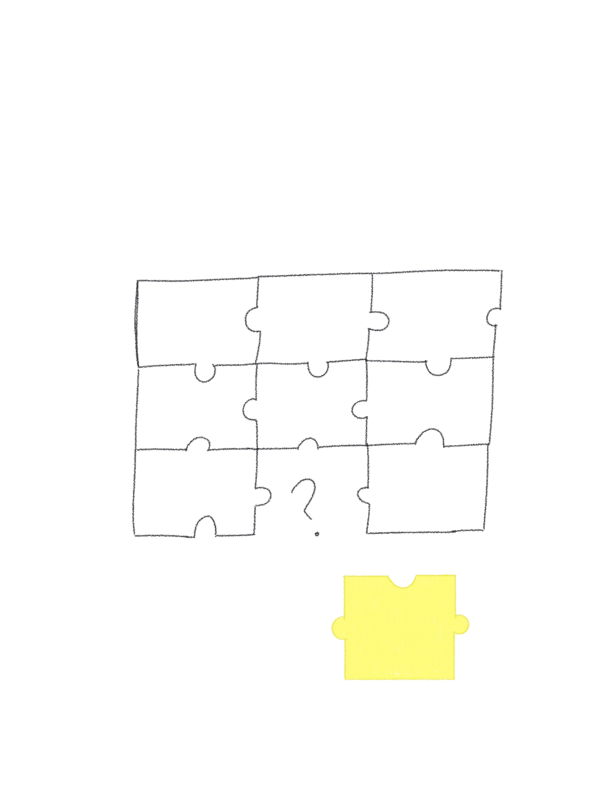

Marco Teórico
Aquí se incluirán las ilustraciones y definiciones de los 15 conceptos trabajados durante el curso.
1. Archivo
Definición: Es como un registro de las luchas, experiencias y expresiones que han dado forma a la comunidad.
2. Amor
Definición: Yo lo veo como un acto de resistencia, de amar libremente, sin etiquetas impuestas por la sociedad.
3. Derechos
Definición: Como garantías fundamentales que permiten a cualquier persona vivir con dignidad, equidad. Sin importar su identidad de género.
4. Disidencia
Definición: Para mi es como desafiar lo que ya esta establecido y construir nuevas formas de ser y estar.

5. Diversidad
Definición: Es lo que enriquece a el movimiento, permitiendo que varias identidades convivan y se fortlezcan juntas.
6. Espacio Seguro
Definición: Puede ser un lugar físico o una persona, en donde las personas se sientan ellas mismas, sin miedo.
7. Expresión
Definición: Es como las personas de esta comunidad se presentan al mundo, puede ser con su apariencia, lenguaje.
8. Historia
Definición: Es la serie de eventos, la lucha y transformación de una comunidad que ha enfrentado mucho y a pesar de eso, sigue construyendo su camino.
9. Identidad de Género
Definición: Creo que es más de como se siente en relación con su propio ser, no creo que se defina por la sociedad, sino la propia conciencia de la persona.
10. No Binario
Definición: Yo lo veo como un recordatorio de que el mundo es mas variado de lo que nos enseñaron.
11. Orientación
Definición: Es el cómo experimentamos el deseo y el afecto, no es algo que deba encajar en categorías, es como una parte de quiénes somos.
12. Orgullo
Definición: Es el sentimiento que tiene una persona sobre ella misma, queriendose como es.

13. Pinkwashing
Definición: El PinkWashing es cuando las empresas fingen apoyar a las comunidades, sacando mercancia para vender.
14. Terapia
Definición: Para mi, es un espacio de apoyo para la salud mental y el autoconocimiento.
15. Visibilidad
Definición: Existir libremente en un mundo que muchas veces no apoya a quienes son diferentes.
Hallazgos
Ahora, en esta sección, recopilamos lo que para nosotros es importante en nuestras entrevistas, como un resúmen.
Hallazgo 1: El usuario siente nerviosismo e incertidumbre al contar por primera vez que es lesbiana, porque teme ser rechazado incluso por personas cercanas, sin embargo busca la validación y apoyo de alguien significativo, lo que genera una tensión emocional intensa que puede frenar su proceso de aceptación.
Hallazgo 2: El usuario piensa mucho tiempo antes de contar su orientación, porque quiere elegir cuidadosamente a quién confiarle esa parte de sí, pero el miedo al juicio y los estereotipos aún influye en esa decisión, generando ansiedad y sensación de aislamiento prolongado.
Hallazgo 3: El usuario hace la confesión en espacios íntimos o digitales, porque necesita sentirse en control de la situación emocional, sin embargo el contexto físico o virtual no siempre garantiza una respuesta segura, lo que produce inseguridad sobre cómo será recibido su mensaje.
Hallazgo 4: El usuario siente alivio después de contarlo por primera vez, porque ha cargado con ese peso durante mucho tiempo, pero no siempre obtiene una respuesta afirmativa o empática, lo que puede provocar una mezcla de liberación y decepción.
Hallazgo 5: El usuario hace su salida del clóset con amistades antes que con la familia, porque considera que sus amigos son un espacio más seguro, pero esto refuerza una distancia emocional con sus vínculos familiares, generando tensión interna por no poder ser completamente honesto en casa.
Hallazgo 6: El usuario siente alivio cuando es escuchado sin juicios, porque necesita validación emocional más que consejos, pero muchas veces recibe preguntas o comentarios incómodos, lo que genera una experiencia de vulnerabilidad mal acompañada.
Hallazgo 7: El usuario hace conexiones con otras personas LGBTQ+ para contar su historia, porque siente que solo alguien que ha vivido lo mismo puede entenderlo, pero no siempre tiene acceso a esos círculos de apoyo, lo que provoca mayor aislamiento y miedo a compartir.
Hallazgo 8: El usuario piensa que debe explicar su identidad con claridad, porque teme ser malinterpretado o que no se tome en serio, pero esto puede hacerlo sentir presionado a usar etiquetas que no quiere, generando incomodidad con su propio discurso.
Hallazgo 9: El usuario siente que está haciendo algo importante al hablar, porque reconoce que es un paso hacia su libertad personal, sin embargo no siempre se siente apoyado para seguir expresándose, lo que crea una tensión entre su deseo de autenticidad y el temor social.
Hallazgo 10: El usuario hace esfuerzos por ocultar su orientación antes de contarla, porque vive en un entorno conservador que no valida la diversidad, pero esta represión interna le genera ansiedad y desgaste emocional, lo que se convierte en una carga cotidiana difícil de sostener.
Hallazgo 11: El usuario piensa que salir del clóset implica perder o ganar amistades, porque su identidad puede cambiar la percepción que los demás tienen de ella, pero también espera que esa sinceridad fortalezca las relaciones reales, generando una tensión entre el miedo al rechazo y el deseo de autenticidad.
Hallazgo 12: El usuario siente culpa por no haberlo dicho antes, porque cree que ha ocultado algo importante a alguien cercano, pero sabe que necesitaba tiempo para comprenderse a sí misma, lo que genera una autocrítica innecesaria que complica su proceso emocional.
Hallazgo 13: El usuario hace comparaciones con otras historias de salida del clóset, porque busca referentes que le ayuden a validar su experiencia, pero muchas veces se siente aún más confundida si su historia no es "ideal", lo que provoca inseguridad sobre si lo está haciendo “bien”.
Hallazgo 14: El usuario siente que contar su orientación lo hace vulnerable, porque expone una parte muy personal de su identidad, sin embargo también reconoce que esa vulnerabilidad puede traer conexión, lo que genera una contradicción emocional difícil de gestionar.
Hallazgo 15: El usuario piensa que debe preparar a la otra persona antes de contarle, porque quiere evitar reacciones negativas o incómodas, pero esto lo obliga a planear demasiado un momento que debería ser natural, lo que genera ansiedad anticipatoria.
Hallazgo 16: El usuario hace la confesión en momentos emocionalmente cargados, porque siente que esa intensidad facilita la sinceridad, pero también puede nublar la forma en que se recibe la información, lo que complica la claridad y el acompañamiento posterior.
Hallazgo 17: El usuario siente que al contar su verdad está rompiendo con estereotipos, porque su historia no siempre se ajusta a lo que otros esperan, pero esto también lo expone a críticas o a que no se le crea, lo que genera frustración por no encajar en narrativas comunes.
Hallazgo 18: El usuario piensa que su orientación puede afectar la dinámica con su amigo, porque teme que la otra persona cambie su actitud o lo evite, sin embargo desea conservar esa amistad sin filtros, lo que genera una tensión entre el deseo de sinceridad y el miedo a perder vínculos.
Hallazgo 19: El usuario hace uso del humor o ironía al contarlo, porque intenta aligerar el momento o evitar la incomodidad, pero esto puede hacer que su mensaje no sea tomado con la seriedad que merece, provocando una sensación de no ser validado emocionalmente.
Hallazgo 20: El usuario siente que su primera salida del clóset marcó su camino de autoaceptación, porque fue el primer paso para dejar de ocultarse, pero también es consciente de que no todas las salidas serán iguales, lo que genera una mezcla de orgullo y preparación constante.